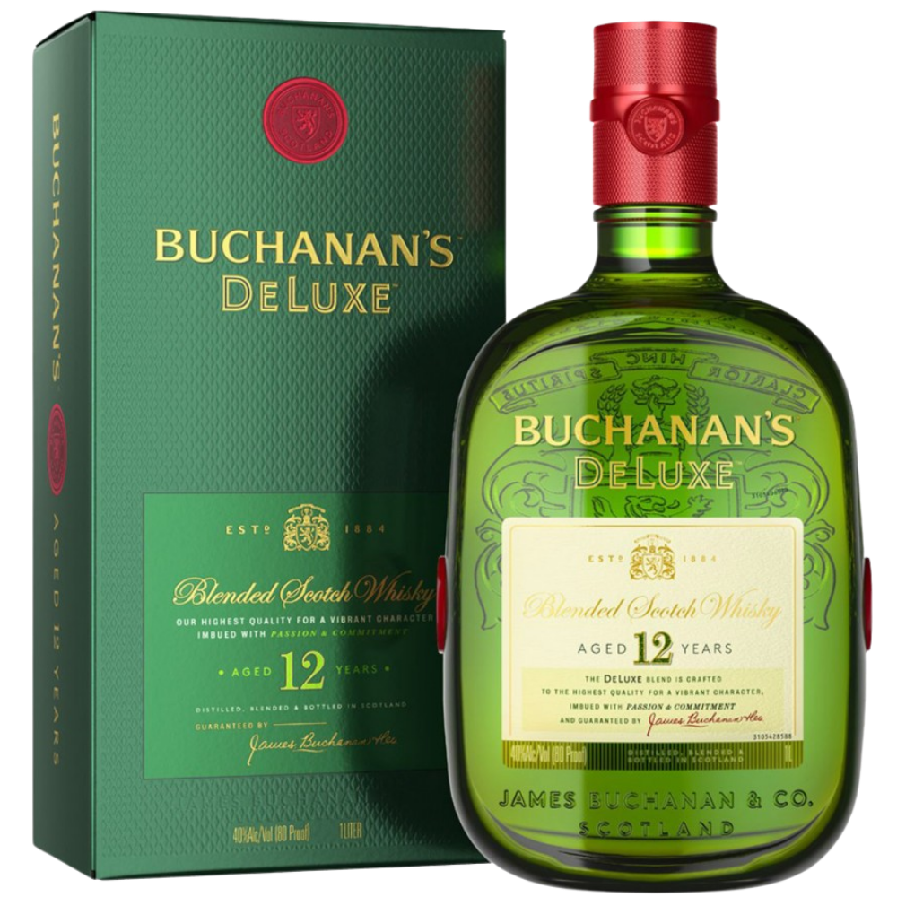
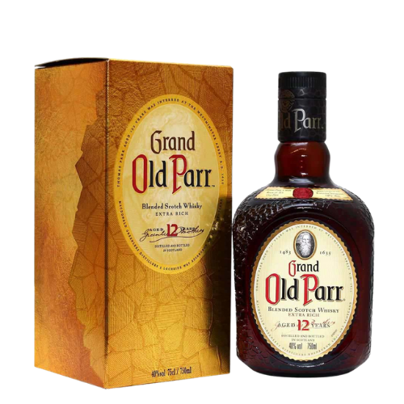
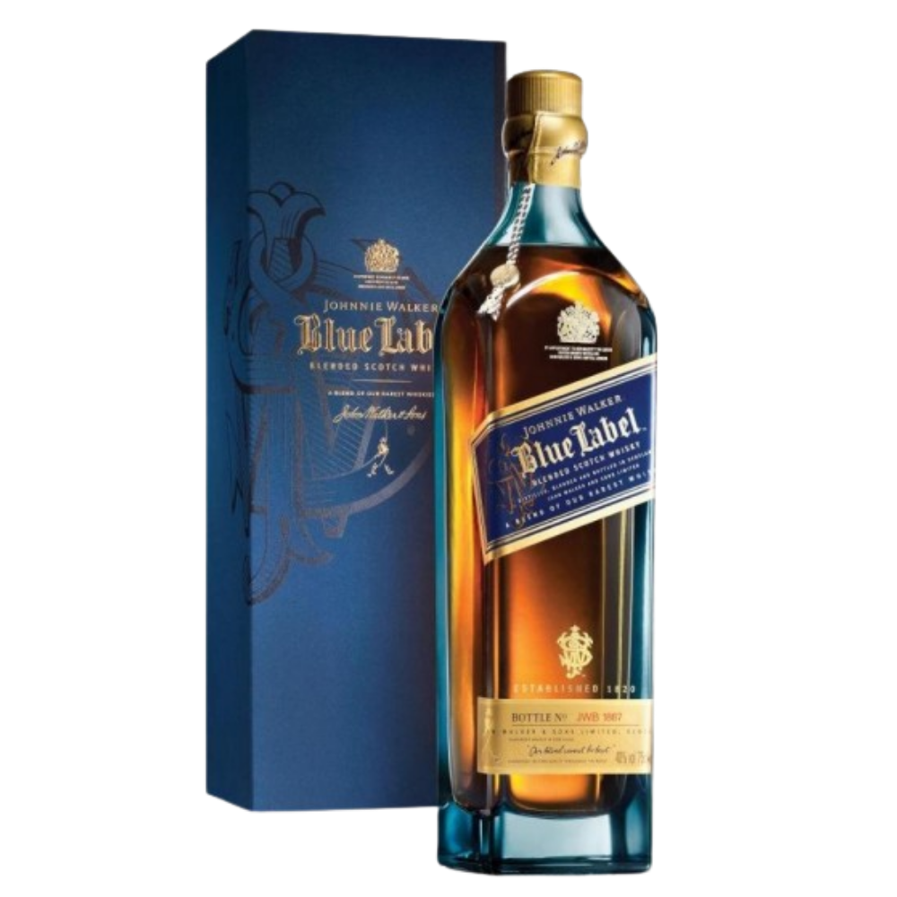

"Bem-vindo ao nosso universo dedicado ao whisky, onde a tradição se encontra com a arte da destilação. Explore as ricas histórias por trás de cada gole, descubra variedades excepcionais, e aprimore sua apreciação por essa nobre bebida. De análises de sabores a harmonizações sofisticadas, nosso site é o guia definitivo para os apreciadores de whisky. Junte-se a nós em uma jornada sensorial através do mundo fascinante do whisky de alta qualidade."
Whisky Buchanan's
O Buchanan's é uma marca de blended whisky escocês de propriedade da Diageo, nomeado em referência a James Buchanan, que, depois de trabalhar na indústria de grãos, estabeleceu a empresa James Buchanan & Co. com o objetivo de criar estilos de whisky mais acessíveis ao público.
Whisky Old Parr
O Grand Old Parr (ou somente Old Parr) é um whisky escocês criado em 1871 pelos irmãos James e Samuel Greenlees. Seu nome é em alusão a Thomas Parr, homem que alegadamente viveu por 152 anos.
Whisky Blue Label
Johnnie Walker, o Blue Label foi elaborado para recriar o sabor e a experiência dos primeiros blended whiskies da marca, do início do século dezenove. As garrafas, de uma cor azul pálida, são numeradas, e apresentadas em um belo estojo de veludo.
Whisky Jack Daniels
.png)
O processo de destilação e envelhecimento do whisky Jack Daniel's é único e envolve o uso de carvão de maple, conhecido como "charcoal mellowing". Este processo, onde o destilado recém-produzido é filtrado através de carvão de maple antes de ser envelhecido em barris de carvalho, é uma das características distintivas do Jack Daniel's e é o que o diferencia de outros whiskies bourbon.